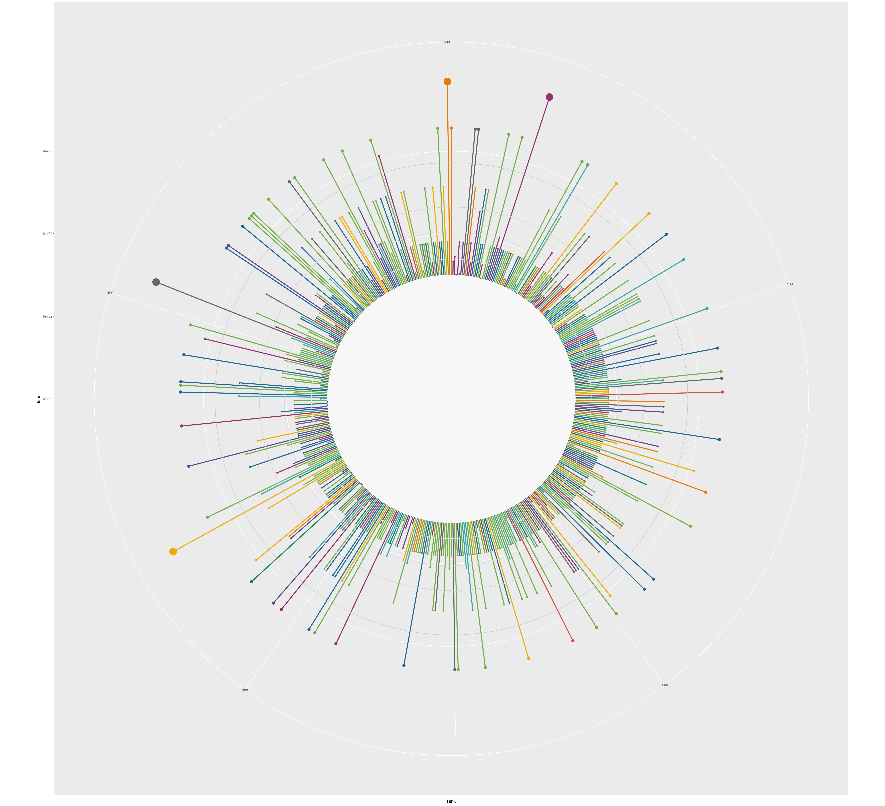
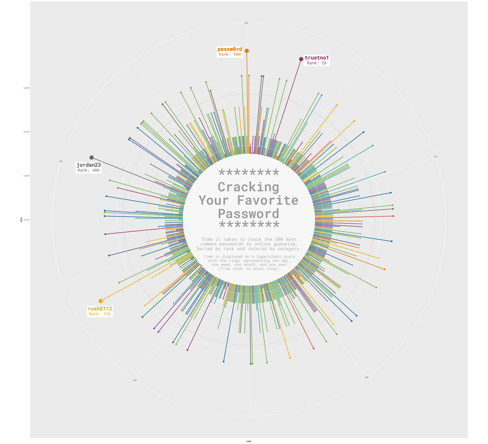
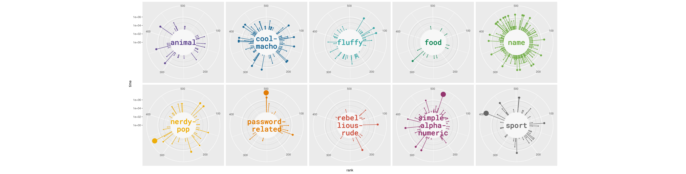

About
This page showcases the work of Cédric Scherer, built for the TidyTuesday initiative. You can find the original code on his Github repository here.
Thanks to him for accepting sharing his work here! Thanks also to Tomás Capretto who split the original code into this step-by-step guide! 🙏🙏
As a teaser, here is the plot we’re gonna try building:

Load packages
Let’s start by loading the packages needed to build the figure. ggtext, and patchwork stand out today. ggtext makes it very easy to style text with Markdown or HTML, and patchwork allows us to compose ggplot2 figures very smoothly.
library(tidyverse)
library(ggtext)
library(patchwork)Today, the plot is going to be based on the Roboto Mono font family. If you are unsure about how to work with custom fonts in R, this post is for you.
Load and prepare the data
This guide shows how to create a beautiful multipanel circular lollipop plot to visualize password popularity and strengths.
The data for this post comes from Information is Beautiful. This guide uses the dataset released for the TidyTuesday initiative on the week of 2020-01-14. You can find the original announcement and more information about the data here. Thank you all for making this guide possible!
Let’s start by loading the dataset:
df_pw <- readr::read_csv('https://raw.githubusercontent.com/rfordatascience/tidytuesday/master/data/2020/2020-01-14/passwords.csv') %>%
# Remove rows where the password is missing
filter(!is.na(password))From all the columns in the data frame, only rank, password, category, value, and time_unit are going to be used. Let’s see what they mean:
rankPopularity in the database of released passwordspasswordThe text of the passwordcategoryThe category where the password falls intovalueTime to crack by online guessingtime_unitTime unit to match with value
The next step is to convert all the time values to a common unit such as seconds. This task suits very well for the case_when() function.
df_pw_time <-
df_pw %>%
mutate(
time = case_when(
time_unit == "seconds" ~ value,
time_unit == "minutes" ~ value * 60,
time_unit == "hours" ~ value * 60 * 60,
time_unit == "days" ~ value * 60 * 24,
time_unit == "weeks" ~ value * 60 * 24 * 7,
time_unit == "months" ~ value * 60 * 24 * 30,
time_unit == "years" ~ value * 60 * 24 * 365,
TRUE ~ NA_real_
)
) Next, a fixed value of 1000 is added to all the times. This is going to leave the extra space needed for the labels within the circle.
plus <- 1000
df_pw_plot <-
df_pw_time %>%
mutate(time = time + plus) %>%
add_row(rank = 501, time = 1)And finally, create a data frame with all the information required to place labels for passwords that were really hard to crack.
labels <-
df_pw_plot %>%
# Value > 90 selects those above 90 years!
filter(value > 90) %>%
# Create label out of the password and its rank
mutate(label = glue::glue("<b>{password}</b><br><span style='font-size:18pt'>Rank: {rank}</span>")) %>%
# These columns give the position of the labels
add_column(
x = c(33, 332, 401, 492),
y = c(75000000, 90000000, 45000000, 48498112)
)Did you note that HTML within the label string? That is one of the many ways to tell ggtext how to customize the text in the plot. That library is great!
Basic circular plot
Let’s start by creating the circular plot on the top panel:
main <- ggplot(df_pw_plot, aes(rank, time, color = category)) +
# This segment represents the vertical lines
geom_segment(
aes(x = rank, xend = rank, y = 0, yend = time),
size = 1.2
) +
# This rect is converted into the inner circle where we're going to place text
# when converting the plot to circular coordinates.
geom_rect(
aes(xmin = 1, xmax = 501, ymin = 0, ymax = plus),
fill = "grey97", color = "grey97"
) +
# Add our custom grid lines for the radial axis.
# These lines indicate one day, one week, one month and one year.
geom_hline(aes(yintercept = (1 * 24 * 60 + plus)), color = "grey88") +
geom_hline(aes(yintercept = (7 * 24 * 60 + plus)), color = "grey85") +
geom_hline(aes(yintercept = (30 * 24 * 60 + plus)), color = "grey82") +
geom_hline(aes(yintercept = (365 * 24 * 60 + plus)), color = "grey79") +
# Add points on the end of each line
geom_point(aes(size = time)) +
# Polar axis (y-axis) is in log10 scale
scale_y_log10(expand = c(0, 0)) +
# Use the Prism color scale for the categories
rcartocolor::scale_color_carto_d(palette = "Prism", guide = "none") +
# Assign a range for the size of the dots
scale_size(
range = c(1, 8),
limits = c(plus, max(df_pw_plot$time)),
guide = "none"
) +
# Make it circular!
coord_polar()
main
Converting a plot from cartesian to circular (polar) coordinates in ggplot2 is as easy as adding a coord_polar() call to the plot. So neat!
Add text annotations
The plot obtained so far looks quite nice, but it’s not done. It still lacks something that indicates how to read the story this chart is trying to tell and the labels that highlight those very hard to crack passwords. Let’s do it!
main <- main +
# Add labels with `geom_richtext()`
geom_richtext(
data = labels,
aes(x = x, y = y, label = label, color = category),
lineheight = 0.8,
size = 8,
family = "Roboto Mono",
label.color = NA
) +
# Regular text with `geom_text()`
# Note that coordinates are explicitly passed here.
geom_text(
x = 500, y = 1.2,
label = "********\nCracking\nYour Favorite\nPassword",
family = "Roboto Mono Medium",
size = 20,
lineheight = 0.87,
color = "grey60"
) +
geom_text(
x = 250, y = 0.25,
label = "********",
family = "Roboto Mono Medium",
size = 20,
lineheight = 0.87,
color = "grey60"
) +
geom_text(
x = 250, y = 1.1,
label = "Time it takes to crack the 500 most\ncommon passwords by online guessing.\nSorted by rank and colored by category.",
family = "Roboto Mono",
size = 7,
lineheight = 0.87,
color = "grey73"
) +
geom_text(
x = 250, y = 1.95,
label = "Time is displayed on a logarithmic scale\nwith the rings representing one day,\none week, one month, and one year\n(from inner to outer ring).",
family = "Roboto Mono",
size = 6,
lineheight = 0.87,
color = "grey73"
)
main
geom_richtext() is kind of magical. Just give it got some text formatted with HTML and it takes care of everything needed to succesfully protray the formatted label in the figure.
So far, this is enough for the top-panel figure. Further modifications such as a different background color and margin adjustments are going to happen when this plot is composed with the lower-panel figures.
Multi panel plot
The original plot we’re trying to replicate consists of several panels and all the work above only replicates the bigger panel on top. The good news is that ggplot2 makes it really easy to reuse existing code for a plot and convert it into a plot made of multiple panels.
First of all, it’s necessary to add line breaks to some existing category names so they fit within the inner circle.
facet_data <-
df_pw_plot %>%
add_row(rank = 501, time = 1, category = unique(df_pw_plot$category)) %>%
# This is where we add line breaks
mutate(
cat_label = case_when(
category == "cool-macho" ~ "cool-\nmacho",
category == "nerdy-pop" ~ "nerdy-\npop",
category == "password-related" ~ "password-\nrelated",
category == "rebellious-rude" ~ "rebel-\nlious-\nrude",
category == "simple-alphanumeric" ~ "simple-\nalpha-\nnumeric",
TRUE ~ category
)
) %>%
filter(!is.na(category))And now let’s make the plot!
# Much of the code is the same than the code above.
facet <- ggplot(facet_data, aes(rank, time, color = category)) +
geom_segment(
aes(x = rank, xend = rank, y = 0, yend = time),
size = 0.6
) +
geom_rect(
aes(xmin = 1, xmax = 501, ymin = 0, ymax = plus),
fill = "grey97", color = "grey97"
) +
geom_hline(aes(yintercept = (1 * 24 * 60 + plus)), color = "grey82", size = 0.2) +
geom_hline(aes(yintercept = (7 * 24 * 60 + plus)), color = "grey79", size = 0.2) +
geom_hline(aes(yintercept = (30 * 24 * 60 + plus)), color = "grey76", size = 0.2) +
geom_hline(aes(yintercept = (365 * 24 * 60 + plus)), color = "grey73", size = 0.2) +
geom_point(aes(size = time)) +
# This is what adds the label within each circle
geom_text(
aes(label = cat_label, color = category),
x = 500, y = 0,
family = "Roboto Mono Medium",
size = 8,
lineheight = 0.87
) +
# This is what wraps the panels for the categories into a layout of 2 rows
facet_wrap(~ category, nrow = 2) +
coord_polar() +
scale_y_log10(expand = c(0, 0)) +
rcartocolor::scale_color_carto_d(palette = "Prism", guide = "none") +
scale_size(
range = c(0.5, 7),
limits = c(plus, max(df_pw_plot$time)),
guide = "none"
) +
theme(
strip.text = element_blank(),
)
facet
Did you spot the difference in the code? Just adding facet_wrap(~ category, nrow = 2) tells ggplot2 to create a plot for each level in the category variable and arrange them in a 2-row layout.
Final chart
The two plots obtained above can be composed very easily into a single figure thanks to the patchwork package. At this stage, it is also important to adjust the margins and the space between the panels to obtain a better appearece. Are you ready to finish? Let’s go!
# Customize the main panel (top-panel)
main <- main +
# This 'theme_void' adds a completely empty theme
theme_void() +
# These negative margins are VERY important to obtain a tight layout.
theme(
plot.margin = margin(-50, -180, -70, -180, "lines"),
)
facet <- facet +
# Same theme_void for the lower panels
theme_void() +
theme(
# Negative spacing between panels, which means they overlap
panel.spacing = unit(-8, "lines"),
# Negative margin on top, to decrease blank space between these panels
# and the main plot on top
plot.margin = margin(-40, 50, 10, 50)
) +
# Adjust settings for the caption
theme(
plot.caption = element_text(
family = "Roboto Mono Medium",
size = 20,
color = "grey60",
hjust = 0.5,
margin = margin(-50, 10, 30, 10)
)
) +
# Add caption
labs(caption = "Visualization by Cédric Scherer ∙ Data by Knowledge is Beautiful")
# Combine the two plots
# The '+' means to 'add' the two ggplot2 plots together.
panel <- (main + facet) +
plot_layout(
ncol = 1, # Results in one plot on top and another on the bottom.
heights = c(1, 0.28) # Height assigned to each plot
)
panel
Awesome, we nailed it!!🥳